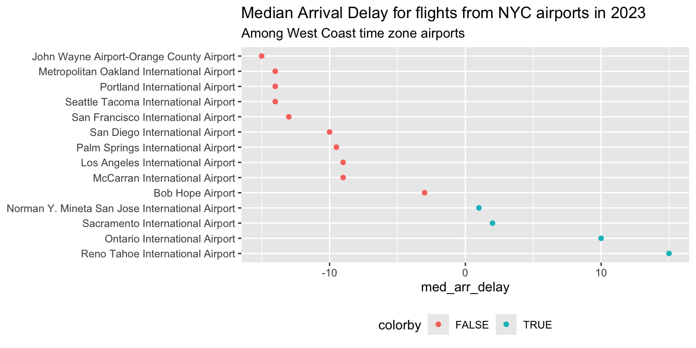

Lab Quiz 02 Practice Questions: Solutions
Know how the following verbs act on a data set
(a)
[1] 1196This keeps only the rows of flights where the origin airport is JFK and the destination is MSP, and saves them in a new data frame called jfk_msp_flights
(b)
# A tibble: 12 × 2
month med_flight_delay
<int> <dbl>
1 1 -1
2 2 -1
3 3 -1
4 4 -2
5 5 -2
6 6 0.5
7 7 3
8 8 -1
9 9 0
10 10 -3
11 11 -2
12 12 -2 This groups the JFK to MSP flights by month, and then computes the median departure delay (in minutes) within each month, ignoring missing values.
(c)
dep_delay is NA for flights that were cancelled (and some others), and median() of a vector containing any NA returns NA. Without na.rm = TRUE, every month with at least one missing value would have a median of NA.
Given a data set and goal, identify and utilize the appropriate verb
(a)
A left_join. The goal is to add the airport’s name and time zone to the flights data: every flight should stay in the data set, whether or not its destination appears in airports.
(b)
colorby is a logical (TRUE/FALSE) variable that is TRUE when an airport’s median arrival delay is greater than 0 (typically late) and FALSE when it is 0 or less (on time or early). It was created inside mutate() from the summarized column, like this:
mutate(colorby = med_arr_delay > 0)We can tell because the points in the plot are split into two colors, and the points on the right (positive values on the x-axis) are in the other color from those on the left.
Given a dataset, describe if it is tidy
The data set is not tidy. Each observation is one day at JFK, and the two variables measured on that day are the minimum and the maximum wind speed. In the data set shown, though, name holds the names of the two variables (min_wind_speed, max_wind_speed), and value holds both kinds of measurement mixed together, so each day takes up two rows and a single column (value) is mixing two different variables.
A tidy version has one row per day, with one column for each variable. We get this with pivot_wider():
tidy_wind |>
pivot_wider(names_from = name, values_from = value) |>
head(3)Sketch of the tidy data set:
| year | month | day | min_wind_speed | max_wind_speed |
|---|---|---|---|---|
| 2023 | 1 | 1 | 0 | 15.0 |
| 2023 | 1 | 2 | 4.6 | 11.5 |
| 2023 | 1 | 3 | 0 | 10.4 |
| … | … | … | … | … |
Use {lubridate} functions to parse dates into ISO8601 format
(a)
The order of the parts is month/day/year, so use mdy():
mdy("2/8/2023")[1] "2023-02-08"(b)
The order is day, month (abbreviated name), year, so use dmy():
dmy("8 Feb 2023")[1] "2023-02-08"Both give "2023-02-08" (February 8th). Note that 2/8/2023 in part (a) is read as February 8th and not August 2nd, because we chose mdy().
Use {lubridate} functions to extract elements of a date/time
# A tibble: 3 × 2
time_hour weekday
<dttm> <ord>
1 2023-01-01 20:00:00 Sunday
2 2023-01-01 23:00:00 Sunday
3 2023-01-01 23:00:00 Sunday wday() extracts the day of the week. By default it returns a number from 1 to 7, label = TRUE returns the name instead, and abbr = FALSE gives the full names (“Monday”) rather than the abbreviations (“Mon”). Any of the following also works for the question as written, as long as the result is the day of the week: wday(time_hour, label = TRUE); wday(make_date(year, month, day), label = TRUE, abbr = FALSE).
Create a factor to represent a categorical variable
# A tibble: 4 × 2
season n
<fct> <int>
1 Winter 104143
2 Spring 115700
3 Summer 108897
4 Fall 106612case_when() assigns each flight a season based on its month, and factor() with levels = turns the result into a factor with the levels in calendar order (otherwise the levels would be in alphabetical order: Fall, Spring, Summer, Winter).
Given a factor, modify the levels as needed
The default order of the labels on the y-axis is alphabetical, because name is a character variable. We reorder name by med_arr_delay with fct_reorder(). In ggplot, the first level of a factor is drawn at the bottom of the axis, so fct_reorder() on its own would put the smallest delay at the bottom; we want it at the top, so we reverse the order with fct_rev() (or, equivalently, use .desc = TRUE).
plot_data <- read_csv("../data/lq2_plot_data.csv")
plot_data |>
ggplot(
aes(x = med_arr_delay, y = fct_rev(fct_reorder(name, med_arr_delay)), col = colorby)
) +
geom_point() +
theme(legend.position = "bottom") +
labs(
title = "Median Arrival Delay for flights from NYC airports in 2023",
subtitle = "Among West Coast time zone airports",
y = NULL
)
Equivalent: y = fct_reorder(name, med_arr_delay, .desc = TRUE).
Common errors: using arrange(med_arr_delay) on the data (this doesn’t change the order that ggplot draws a character variable in); fct_reorder(med_arr_delay, name) (arguments swapped); and fct_reorder() without the reversal, which gives the longest delay